생성 AI 그림을
게임 규격으로
길들입니다
서가은아트 파이프라인, 검수 도구, 픽셀 아트
github.com/Seogaeun03
seogu0307@gmail.com
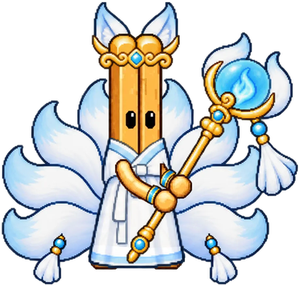


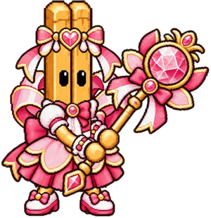
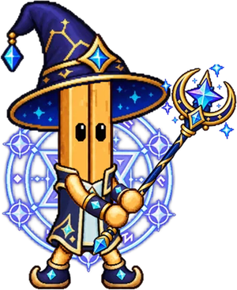
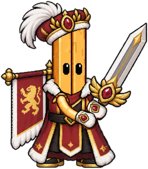
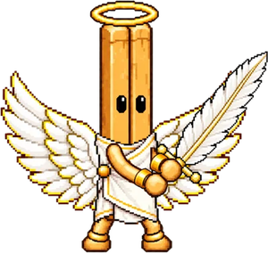
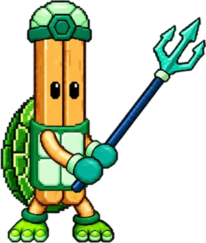

예쁜 한 장보다, 천 장이 같은 규격으로 나오게
기준점, 바닥선, 크기, 색 수를 정하고 어긋난 걸 자동으로 잡습니다.
생성 AI가 같은 실수를 하면 지시를 늘리지 않고 입력과 제작 방식을 바꿉니다.
자동 검사를 통과한 뒤에도 이음매, 덧칠, 흐름을 직접 다시 봅니다.
장비, 모션 시트, 몬스터 생성과 규격화
한짝, DEVIANT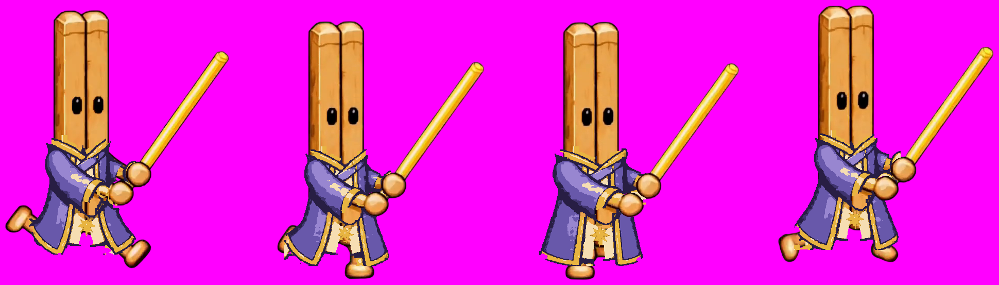
합성, 정합, 검수 스크립트 (AI와 함께 작성)
한짝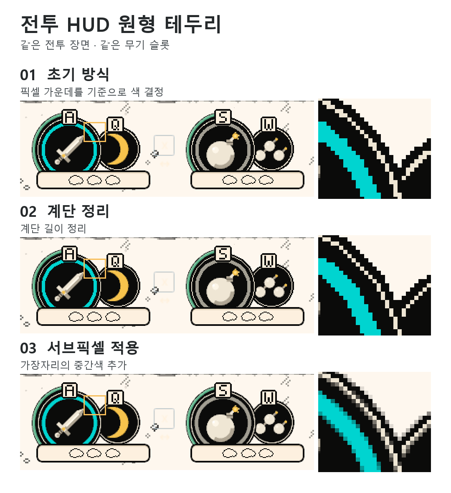
부위별로 직접 고치는 HTML 편집기 30개
DEVIANT
에셋 적용, 연출, 성능 측정
DEVIANT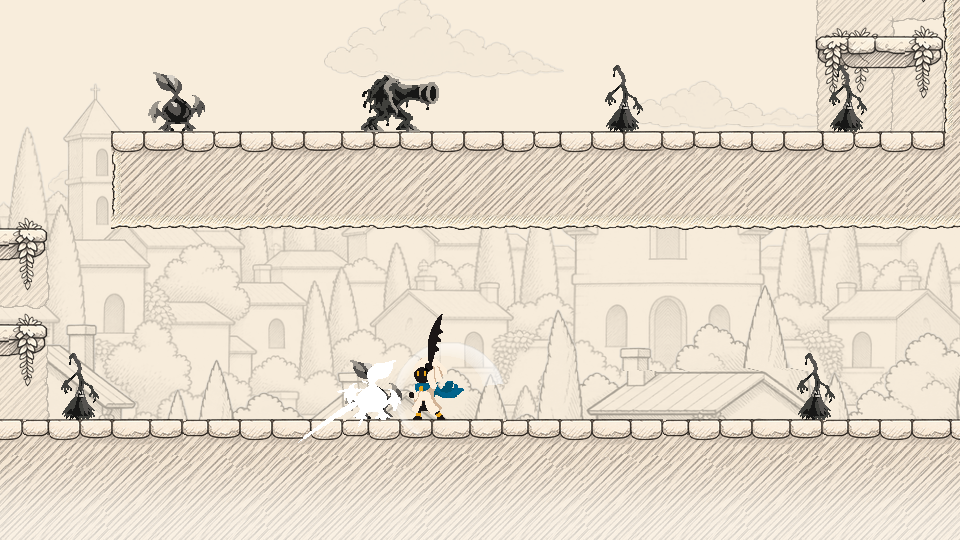
엔진에 넣기 전 수치와 연출 비교
DEVIANT꺼 둬도 싸우는
웹 방치형 게임
- 기간
- 2026.08.18 ~ 09.28 (6주), SSAFY 특화 프로젝트
- 팀
- 6인, 실서비스 운영
- 개요
- 젓가락 캐릭터가 알아서 싸우고, 옷을 갈아입히며 키우는 게임
- 역할
- 팀장, 디자인 총괄, 치장 제작 파이프라인 설계
- 기술
- 생성 AI 이미지Python 이미지 처리PSD 레이어React (팀)
- 수상
- 우수상
프레임마다 따로 그리면 옷이 흐른다. 네 칸을 한 장에

마법사 달리기 네 칸을 한 번에 생성한 시트. 배경 마젠타는 알파로만 떼고 색은 건드리지 않습니다.
낱장으로 생성하자 회차마다 옷 폭이 줄고 키가 커졌습니다. 기분 탓이 아닌지 재 보니 키와 기둥 폭이 +3%에서 +11%로 흘렀습니다.
run 01~04를 한 장에 생성하게 바꿨습니다. 같은 붓으로 한 번에 그리니 네 칸이 같은 옷이 됩니다.
후처리가 옷 색 11,977가지를 7가지로 눌러 버린 걸 보고, 알파만 떼고 색은 그대로 둔다는 규칙을 다시 세웠습니다.
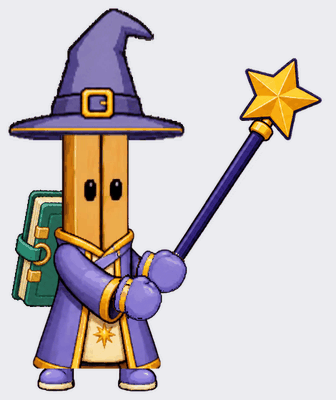
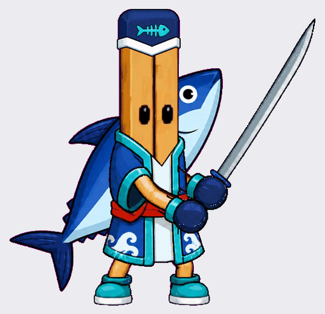
몬스터 90종 1,800프레임, 발끝 0px

통닭 대왕 약 55px 떠 있던 것을 0px로
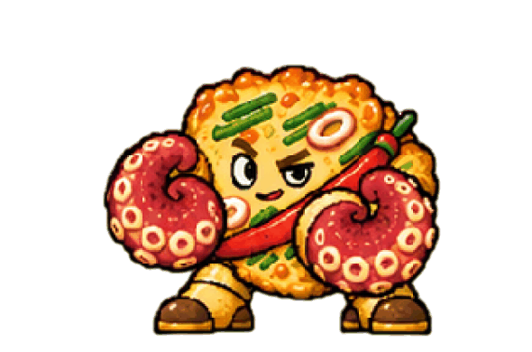
문어 장군 공격 모션
몬스터 시트의 발끝이 동작마다 흐르고, 일부는 격자 밖으로 넘쳐 잘렸습니다. 보스는 125px 뜨고 112px 쏠려 있었습니다.
잘림 없는 분할, 배경 제거, 발끝 맞춤을 한 흐름으로. 닭이 떠 보이는 걸 보고 발끝 기준을 발이 아니라 몸통으로 바꿨습니다.
동작마다 GIF를 뽑아 눈으로 훑었습니다. 패스트푸드 몹 6종과 보스 4종은 직접 뽑아 넣었습니다.
1,800프레임
450검수 GIF
0잘림
화면이 멀쩡해 보여도 진짜 데이터인지 확인한다
- 기간
- 2026.07.06 ~ 08.10 (5주), 6인
- 개요
- 발표와 면접을 촬영하면 음성, 몸짓, 내용을 분석해 영상과 리포트로 다시 보여 주는 AI 말하기 코치
- 역할
- 프론트엔드: 면접과 폴더 화면, 리포트 화면, API 연동
- 기술
- Vue 3PiniaJavaScriptMediaPipe
API가 실패하면 가짜 데이터가 정상 화면을 만들었습니다. 자동 대체를 끄고 명세와 실제 응답을 대조했습니다.
상단 시선 이탈 11회와 질문별 합계 10회가 다른 걸 찾아 같은 기준으로 맞췄습니다.
연결점 웹 화면을 다뤄 본 경험으로, 한짝과 DEVIANT의 검수 도구와 시험장을 HTML로 만들었습니다.

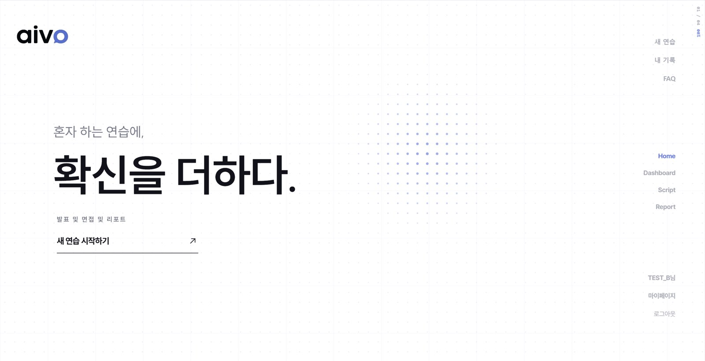